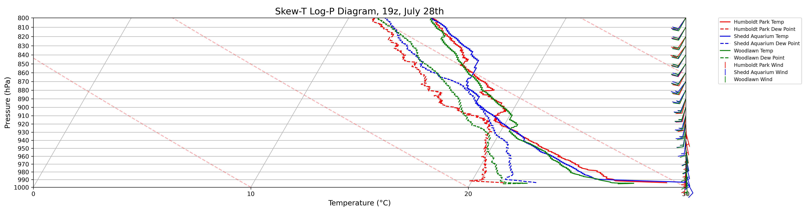

Visualization of the 1000-800 mb level on Urban Canyon IOP 1&2 Soundings
import pandas as pd
import numpy as np
import matplotlib.pyplot as plt
from metpy.plots import SkewT
from metpy.units import units
import metpy.calc as mpcalc
def filter_data_every_10mb(data):
unique_pressures = np.arange(800, 1001, 10) # Define the range of pressure levels you are interested in
filtered_data_list = []
for level in unique_pressures:
# Find all data points within the tolerance of 1 hPa
within_tolerance = data[np.isclose(data['P'] % 10, level % 10, atol=1)]
if not within_tolerance.empty:
# Find the data point closest to the target pressure level
closest = (np.abs(within_tolerance['P'] - level)).idxmin()
filtered_data_list.append(within_tolerance.loc[closest])
filtered_data = pd.DataFrame(filtered_data_list)
return filtered_data
def read_gps_file(file_path):
df = pd.read_csv(file_path,
skiprows=[0, 1, 2, 3, 4, 5, 6, 7, 8, 10],
sep=r'\s+', encoding='latin1')
good_columns = df.columns[1:]
df = df.drop(columns="HeightE")
df.columns = good_columns
p = df['P'].values * units.hPa
z = df['HeightMSL'].values * units.m
T = df['Temp'].values * units.degC
Td = df['Dewp'].values * units.degC
wind_speed = (df['Speed'].values * units('m/s').to('knots')
wind_dir = df['Dir'].values * units.degrees
u, v = mpcalc.wind_components(wind_speed, wind_dir)
df = pd.DataFrame({'P': p, 'T': T, 'TD': Td, 'u': u, 'v': v, 'z': z})
return df.dropna()
def read_rts_file(file_path):
df = pd.read_fwf(file_path, delimiter='\t', encoding='iso-8859-1')
df = df.rename(columns={'Pressure[mbar]': 'P', 'T[°C] ': 'T', 'Dew [°C]': 'TD', 'Wsp [m/s]': 'wind_speed', 'Wdir [°]': 'wind_dir'})
p = df['P'].values * units.hPa
T = df['T'].values * units.degC
Td = df['TD'].values * units.degC
wind_speed = df['wind_speed'].values * units('m/s').to('knots') # Convert to knots
wind_dir = df['wind_dir'].values * units.degrees
u, v = mpcalc.wind_components(wind_speed, wind_dir)
df = pd.DataFrame({'P': p, 'T': T, 'TD': Td, 'u': u, 'v': v})
return df.dropna()
def determine_label(file_path):
if 'GPS' in file_path:
return 'Humboldt Park'
elif 'Sonde1' in file_path:
return 'Shedd Aquarium'
elif 'Sonde3' in file_path:
if '0727' in file_path or '0728' in file_path:
return 'Woodlawn'
else:
return 'Gary Comer'
return 'Unknown'
files = [
('20240728_1900_SHGPS.GPS', read_gps_file),
('20240728_1900_Sonde1_RTS.txt', read_rts_file),
('20240728_1900_Sonde3_RTS.txt', read_rts_file)
]
data_dict = {file: func(file) for file, func in files}
# Filter data to include only the closest point to each pressure level at intervals of 10 mb
filtered_data_dict = {file: filter_data_every_10mb(data) for file, data in data_dict.items()}
# Create a new figure with a significantly increased height
fig = plt.figure(figsize=(5, 50), dpi=300) # Adjusting the height to make the figure taller
rect = [-1, -1, 3, 1000] # Adjust rect parameter accordingly
skew = SkewT(fig, rect=rect)
colors = {'Humboldt Park': 'r', 'Shedd Aquarium': 'b', 'Woodlawn': 'g', 'Gary Comer': 'g'}
for file, data in data_dict.items():
label = determine_label(file)
color = colors.get(label, 'k')
skew.plot(data['P'], data['T'], color, label=f'{label} Temp')
skew.plot(data['P'], data['TD'], f'{color}--', label=f'{label} Dew Point')
filtered_data = filtered_data_dict[file]
skew.plot_barbs(filtered_data['P'], filtered_data['u'], filtered_data['v'], color=color)
# Create custom legend
handles, labels = skew.ax.get_legend_handles_labels()
for file, data in data_dict.items():
label = determine_label(file)
color = colors.get(label, 'k')
handles.append(plt.Line2D([0], [0], color=color, marker='|', linestyle='None', markersize=10, label=f'{label} Wind'))
skew.ax.legend(handles=handles, loc='upper left', bbox_to_anchor=(1.05, 1), borderaxespad=0., fontsize=8)
skew.plot_dry_adiabats(alpha=.3)
# Set the limits for zooming and custom y-axis ticks
skew.ax.set_xlim(0, 30) # Temperature range from 0 to 30°C
skew.ax.set_ylim(1000, 800) # Pressure range from 1000 to 900 hPa
skew.ax.set_yticks(np.arange(800, 1001, 10)) # Pressure levels at 5 hPa intervals
# Add gridlines, title, and labels
skew.ax.grid(True)
skew.ax.set_title('Skew-T Log-P Diagram, 19z, July 28th', fontsize=15)
skew.ax.set_xlabel('Temperature (°C)', fontsize=12)
skew.ax.set_ylabel('Pressure (hPa)', fontsize=12)
# Save and display the plot
plt.savefig('skewt_trend_19z28th.png', bbox_inches='tight', dpi=300)
plt.show()
